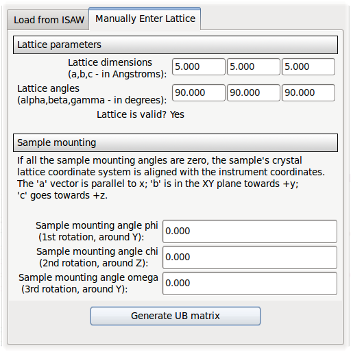

CrystalPlan 1.0 User Guide
by Janik Zikovsky (zikovskyjl@ornl.gov)
written April 14th, 2010.
Introduction
CrystalPlan is an experiment planning tool for crystallography; CrystalPlan...
- Lets you put in a list of sample orientation angles, and...
- ...calculates the coverage of detectors in reciprocal space.
- When you give it your sample's lattice parameters and UB matrix, it...
- ...predicts the positions of single-crystal peaks.
- You can then optimize your experiment by trying different orientations and seeing if your coverage statistics will still be adequate.
Step-by-Step Tutorial
This tutorial will show you how to use most of the features of CrystalPlan by going through a typical run, step-by-step.
1. Starting CrystalPlan
From the terminal command line, type:
crystalplan.py
The GUI launches in two new windows. Select the main window:

Most of your workflow will occur by navigating between these notebook tabs:

2. Defining the Reciprocal Space of Interest and Wavelengths
Here you will set the general parameters of your experiment.
- Click the "Q-Space" tab, if it not already selected. If necessary, change the parameters so that it matches those shown below:

- d_min
- The smallest d-spacing allowed. Your simulated q-space will be limited to a maximum $q = {2\pi}/d_{min}$
- q-resolution
- The size of a voxel (smallest volume element) simulated, in $\AA^{-1}$. The # of points will be calculated and shown below; you will get a warning if you try to make very high-resolution calculations, because memory consumption, etc. will be very high.
- wavelength limits
- Specify your experiment's wavelength limits, in Ansgtroms; this could be due to limits on your neutron source or your detectors.
- When done, click the
 button. Changing these settings requires re-doing a lot of calculations, which may take some time if you have a lot of orientations saved.
button. Changing these settings requires re-doing a lot of calculations, which may take some time if you have a lot of orientations saved.
3. Detectors
Here, you ensure that CrystalPlan has the correct detector geometry loaded.
- Click the "Detectors" tab.
- Load a detector geometry by clicking the
 button. In the File Loading dialog that opens, select the "TOPAZ_detectors_all.csv" file.
button. In the File Loading dialog that opens, select the "TOPAZ_detectors_all.csv" file.
- After a few seconds, the detector geometry is loaded. To confirm that the detectors are in the correct positions, you can visualize them in direct space by clicking
 ,
which displays them in a window like this one:
,
which displays them in a window like this one:

- We will come back later to the other controls on this tab.
4. Goniometer
Now, you want to make sure that CrystalPlan is aware of which goniometer is currently in
use in your instrument.
- Click the "Goniometer" tab. The goniometer that is currently selected is shown at the top:

- Select the TOPAZ in-house goniometer:

- Some general information about the goniometer is shown:

- But your selection is not complete until you click

- The program will now be aware of the sample orientation angle limitations that your instrument has, and will give you warnings if you try to use an inaccessible sample orientation.
5. Sample Settings
Now, you will want to enter or load in information about your sample: crystal lattice parameters, UB matrix, etc.
- Click the "Sample" tab. You are presented with an overview of the crystal parameters

5.1. Edit Crystal Parameters dialog
- Click
 .
.
- This brings up the "Edit Crystal Parameters" dialog box. You may edit the name and description:

- The top of the dialog shows you the current crystal parameters.
- The "Manually Enter Lattice" tab allows you to try out the program by typing in
your lattice parameters and the sample mounting.

- Clicking the
 button creates a UB matrix that you can use to test features of the program; however we will not be doing that in this tutorial.
button creates a UB matrix that you can use to test features of the program; however we will not be doing that in this tutorial.
- Instead, go to the "Load from ISAW" tab:

- ISAW can generate a UB matrix file that contains:
- The crystal's measured UB matrix - this contains information about how the crystal is mounted relative to
- The crystal's lattice lengths and angles.
- To learn how to calculate a UB matrix, please refer to ISAW's documentation. Using ISAW, you will be using the Initial Peaks wizard to locate and index the peaks. This method can be used to find both the lattice parameters and UB matrix, or you can specify the lattice parameters if known.
- You can also generate the same file using ISAWev (the ISAW event viewer), working directly from event data in reciprocal space. The procedure is the same (find and index the peaks) though the interface is a little different. Both methods generate exactly the same file format.
- However, the UB matrix output by ISAW includes the orientation due to the goniometer and not just the crystal mounting orientation.
- The UB matrix needs to be corrected to account for this extra rotation.
- This requires you to enter the goniometer angles corresponding to the sample orientation in the UB matrix file to load - the goniometer settings at the time that data was acquired.
- Enter these angles, in degrees, here:

- A sample UB matrix file can be found in the "model/data/quartzub.txt" file. Click the
 button and select this file in the dialog.
button and select this file in the dialog.
- The top of the dialog shows you the loaded lattice parameters and UB matrix.

- From here, you can set the crystal's point group symmetry; however, we will leave it as "-1 (Triclinic)", as shown.
- Click
 to apply the changes; clicking
to apply the changes; clicking
 would revert all the changed made in the dialog.
would revert all the changed made in the dialog.
- Some recalculations will occur when changing the crystal lattice parameters or orientation.
5.2. Choosing H,K,L ranges
- Still in the Sample tab, the following GUI allows you to pick which HKL to display:

- These H,K,L ranges limit which peak indices that CrystalPlan will calculate and display.
- You can type in your ranges manually, however, I recommend that you keep both checkboxes checked:
- They use the d_min parameter you set earlier in the "Q-Space" tab.
- The first calculates the H,K,L ranges that fill a box of side in q-space corresponding to d_min.
- The resulting peaks will form a cube only if all the lattice angles are 90 degrees.
- By checking the second box, any peaks with a d-spacing smaller that d_min will be rejected, leaving a sphere of reflections in q-space.
- Click the
 button to apply
any changes you have made. All reflections are re-calculated.
button to apply
any changes you have made. All reflections are re-calculated.
6. Adding Sample Orientations
-
Click the "Start" button to begin the calculation.

- The calculation progress will be shown in this progress bar:

- If the calculation runs too long, you can cancel it before it completes. Sample orientations that have already been calculated will remain in the experiment plan.